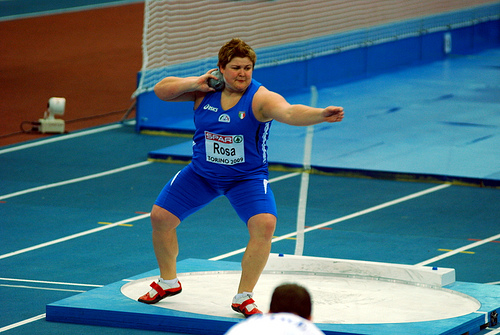
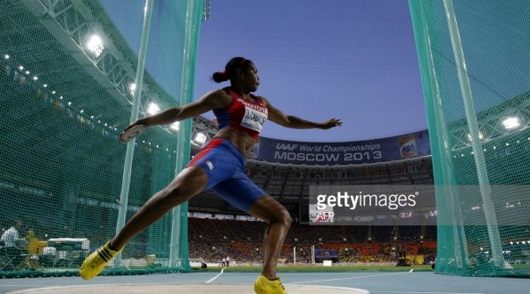
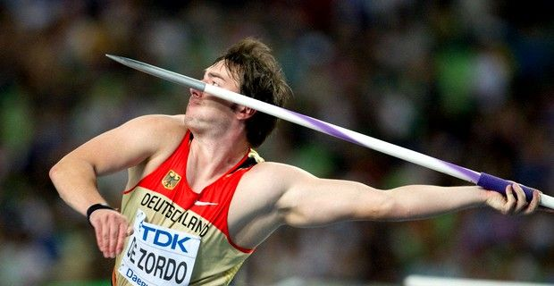
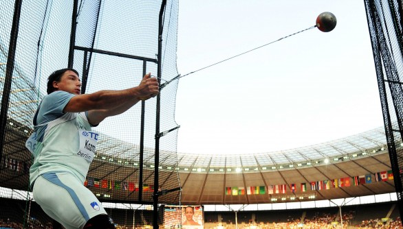

Anche i lanci, come i salti, si svolgono su delle “pedane”, ed ogni tipologia di lancio ne possiede una specifica ad esso. In queste gare l’obiettivo è lanciare un attrezzo il più lontano possibile, restando con il proprio corpo all’interno della pedana di lancio.
I lanci si dividono in 4 tipologie a seconda del tipo di attrezzo:
- Getto del peso
- Lancio del disco
- Tiro del giavellotto
- Lancio del martello
Queste gare sono la più grande espressione di potenza dell’atleta tra le gare di atletica leggera.
Nel getto del peso, l'atleta, cerca di scagliare una sfera di metallo, detta peso, il più lontano possibile.
Il termine “getto” definisce un gesto tecnico caratterizzato dal passaggio da un atteggiamento breve dell’arto di lancio, ad uno lungo. Ciò è esattamente quello che avviene nella proiezione del peso.

Lancio del disco
Il lancio del disco è una specialità sia maschile sia femminile dell’atletica leggera in cui l’atleta cerca di scagliare il più lontano possibile un attrezzo di forma lenticolare fatto di legno, con un’anima in metallo (il disco).
Il disco è uno degli sport più antichi, con origini nell’Antica Grecia.: il Discobolo di Mirone, la famosa scultura che ritrae un atleta che si appresta a scagliare il disco, risale al V secolo a.C.

Tiro del giavellotto
Il tiro del giavellotto, spesso ed erroneamente chiamato “lancio del giavellotto”, è una specialità sia maschile che femminile dell’atletica leggera, nella quale l’atleta, dopo una fase di rincorsa, cerca di tirare il più lontano possibile il giavellotto, un attrezzo di forma affusolata fatto di metallo e fibra di vetro.
Uomini e donne lanciano con attrezzi di peso differente: 600 gr per le donne 800 gr per gli uomini.

Lancio del martello
Il lancio del martello è una specialità sia maschile sia femminile dell’atletica leggera in cui l’atleta cerca di scagliare il più lontano possibile una sfera metallica legata con un cavo d’acciaio ad una impugnatura (il martello).
